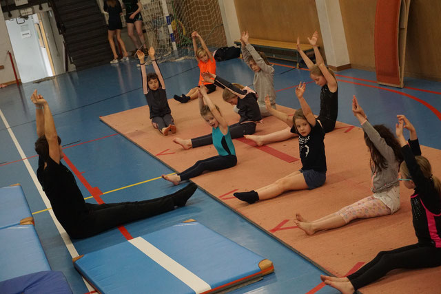

My jobs.
Gymnastics trainer at Elastika VZW Roeselare
I train gymnasts for trampoline from ages 10+.
I am currently overseeing 2 groups of 16 gymnasts and 1 of 10 gymnasts.
These are 2 recreational groups and 1 more advanced group (D-level). I want to enter official tournaments
as soon as they are ready.
I have an official GymFed diploma for Gymnastics. After taking a theoretical and physical exam
on top of an internship, they granted me my diploma.
Tutoring
I tutor children about maths and physics.
I tutor kids who aren't up-to-date on their own lessons or don't understand them very well.
Through my practical approach of using practice problems, I can explain most subjects about maths and
generally physics to almost any child
I can come to your house, or we can arrange an online consultation.